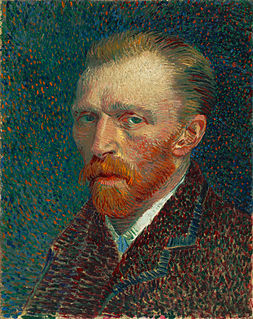

이준석 "비단주머니는 '세대구도 대선'…
그런데 일부서 2030 비하, 몰상식"
이준석 국민의힘 대표는 자신이 준비하고 있던 비단주머니 속 내용 중 하나가 ‘2030세대 끌어안기’였는데 최근 당내 일부 인사들이 ‘2030을 비하’하는 언행을 해 일부 틀어지게 만들었다며 “몰상식하다”고 작심 비판했다.
이 대표는 9일 YTN라디오 ‘황보선의 출발 새아침’
과 인터뷰에서 진행자가 “2030 탈당러시, 엑소더스가 사실이냐”고 묻자 “원래 경선 뒤 실망한 분들이 탈당으로
나타나는 경우가 있다”고
했다.
다만 “안타까운 것이 이것에 대해 보수진영의 몰상식한 분들이 ‘애초부터 역선택한 분들’, ‘2030이 한줌밖에 안 되느니’라는 비하적 발언을 했다” 며
“그런 발언을 한 분들은 2030을
10명이라도 모아온 실적이 있느냐 반문하고 싶다”
고 당내 일부 세력을 겨냥했다.
이 대표는 “2012년 대선은 지역분할 구도로 짜 승리를 모색했지만 지금은 그런 구도가 아닌 세대구도로 선거를 치르는 것이 당연히 유리하다”면서 자신이 준비한 비단주머니 내용 일부를 꺼내 보였다.
주요기사
기업들, 세계 백방으로 뛰지만… 日-印 “우리도 빠듯”
李 ‘재난지원금’ vs 尹 ‘손실보상’‘코로나 1차전’ 기선잡기
이어 “그런데 이런 몰상식한 발언이 나오면 젊은 층이 우리 후보를 향한 투표강도, 의향, 지원강도가 굉장히 낮아질 수 있다”고 우려했다.
전날 김재원 최고위원이 “2030탈당은 40명에 불과하다”
고 한 것에 대해 “1800명이나 된다”고 받아쳤던 이 대표는 “40명은 가만히 있어도 자연탈당하는 숫자다”며 “김
최고는 자연탈당
수준으로 사태를 덮으려 하는데 무슨 의도가 있었다고 본다”고 김 최고를 비난했다.
진행자가 “전국적인 2030탈당 숫자가 궁금하다”고 하자 이 대표는 “당 대표가 자해하자는 것도 아니고 그걸 확인해 줄 수야”라며 말을 아꼈다.
이 대표는 2030이 홍준표 후보를 지지했던 이유로 “홍 후보의 정책적 성향, 즉 포퓰리즘 반대, 할말은 한다는 등 불편한 진실을 이야기 한다는 것”이었다며 그런 까닭에
“2030표가 그것과
정반대 선상에 있는 ‘거짓으로 점철된’
이재명 후보에게 갈 리는 없다고 본다”고 주장했다.
따라서 “윤 후보가 굉장히 겸손한 자세로 젊은 세대와 소통을 늘려나간다면 좋은 결과가 있을 것”
이라고 조언한 이 대표는 “하지만 주변 인사들이 자극적인 언사, 조롱하는 발언을
하면 이분들은
투표의지가 약해지거나 무당층으로 갈 가능성이 있다”고 경고했다.
한편 진행자가 “8일 윤 후보에게 비단주머니를 줬는데 어떤 비책이 들어 있는지”
를 묻자 이 대표는 “젊은 세대에게는 단순 지지율 이상의 의미가 있는 것이 인터넷 공간이다”며
“인터넷 공간에서
자발적으로 정보를 생산하고 유통하고 선거에 필요한 각종 짤방이라든지 아니면 영상자료, 상대 후보에 대한 적극적인 제보행위 등을 젊은 세대가 능수능란하게 수행을 한다”라는 말로 2030의
인터넷
공간 활용을 주문했음을 시사했다.
아울러 “홍준표 캠프도 알지 못하는 짤방들이 막 유통되는 걸 보고 놀랐다고 한다”
며 “그래서 저는 우리 후보도 그런 것을 느껴볼 필요가 있다(고 주문 했고) 이런 프로젝트들을 추진할
것으로
보인다”고 덧붙였다.
원본기사
언론사 주요뉴스
- 이재명 “대장동 수사 미진하면 특검도 필요하다는데 공감”
- 윤석열·이재명 첫 조우… 尹 “성남 법정서 자주 봐” 李 “기억 안나”
- 정부 “中, 요소 1만8700t 한국 수출 절차 진행 확인”
언론사 랭킹뉴스
분야별 주요 뉴스
- 정치
- 與, 재난금→방역지원금 이름 바꿔 강행… 野 “노골적 매표전략”
- 尹 중도확장 본격화… 여성대회-5·18묘지-봉하마을 릴레이 방문
- 경제
- 中수출규제 3주뒤 첫 ‘요소수 회의’ 연 정부
- 출근 안한 사주 일가에 수십억 급여…IT-바이오 기업, 세금 탈루 요지경
- 사회
- [단독]정영학, 대장동 사업공고 나기도 전에 사업성 평가부터 받아
- “20개월 문닫았는데 지원금 한푼도 없어”… 코로나 손실보상서 소외된 학교 매점들
|
|
국민의 힘
오늘의 작품 & 느낌
gogh의<자화상>